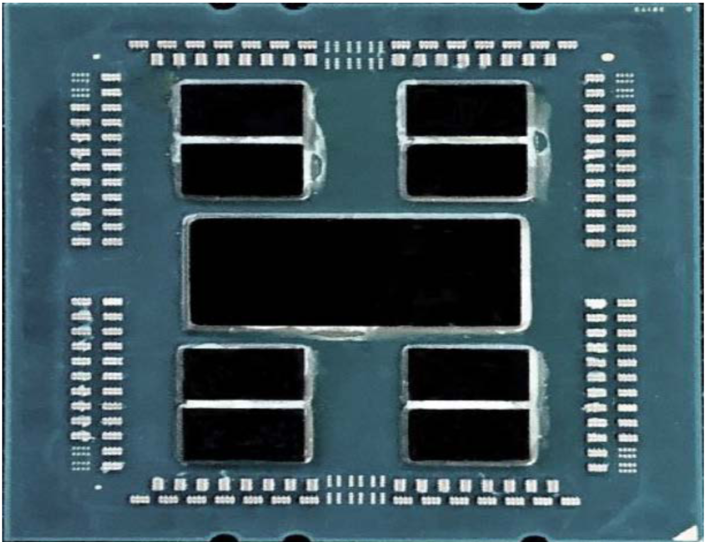
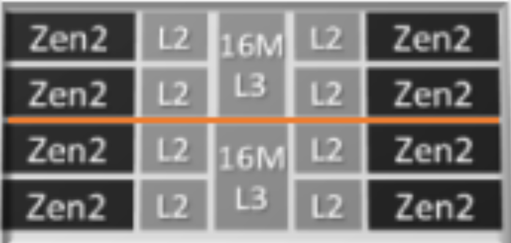
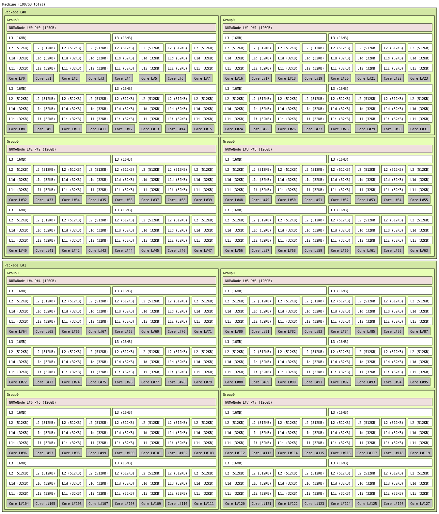
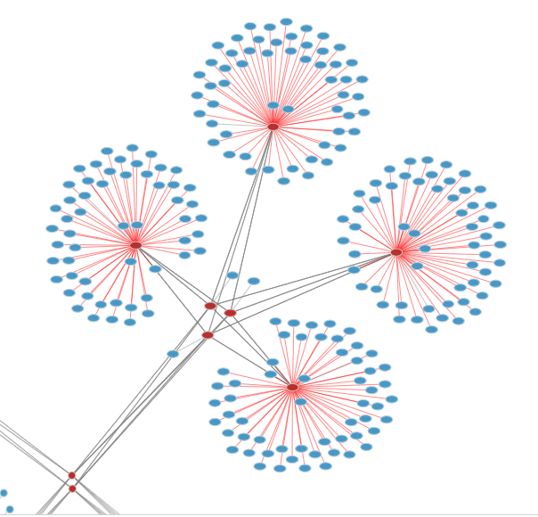

Cluster amd20 with AMD CPUs
In 2020, the HPCC purchased a new cluster amd20 powered by AMD EPYC processors. Each amd20 node has total 128 cores and at least 0.5 TB RAM. Each core has a base clock speed 2.6 GHz, up to 3.3 GHz.
Please check the following sections for how to use the test nodes and the node performance from our test results for user reference.
Running Jobs on amd20 Test Nodes
Basic Mathematical Library Tests on AMD EPYC Processors
AMD Optimizing CPU Libraries and Compilers
Basic architecture information
The AMD CPU contains 2 sockets with CPU packages with 4 NUMA nodes in each socket, and 16 cores in each NUMA node. Each NUMA core contains two "Core Complex Dies", which have two four-core "Core-Complex" modules. Each four-core Core-Complex shares a 16 MB L3 cache.

A 7002 series processor (via AMD)

A Core-Complex (via AMD) logical diagram.

A 1 TB amd20 node.
Generally, cores within the same L3 cache have the lowest latency, followed by in-NUMA cores, other cores on the same socket, and cores on the other socket are slower. The SLURM job scheduler on the HPCC will try to keep within the same NUMA node by default. One option to try during testing is to use OpenMP within the L3 node, and MPI for everything else. When using newer versions of OpenMPI, you can use the following argument with OMP_NUM_THREADS=4 to distribute one 4-thread rank per L3:
1 | |
In testing, the Intel Compiler and MKL toolchain works well if you “export MKL_DEBUG_CPU_TYPE=5” and compile for AVX2 instead of AVX512.
If you’re doing single-node scaling work, be aware of memory bandwidth; on these nodes, HPL scales from 1-96 cores linearly but only 3.5 -> 4 TF from 96->128 when going from 3 cores per L3 to 4.
Each node has a 100 gigabit HDR100 connection. There are 52-56 nodes per switch:

AMD20 network topology.
You can figure out by using scontrol show node and looking at
1 2 3 4 5 6 7 | |
Z21/Y21 are on the same switch, etc.
Resources:
High Performance Computing: Tuning Guide for AMD EPYC™ 7002 Series Processors
Compiler Options Quick Ref Guide for AMD EPYC 7xx2 Series Processors.pdf